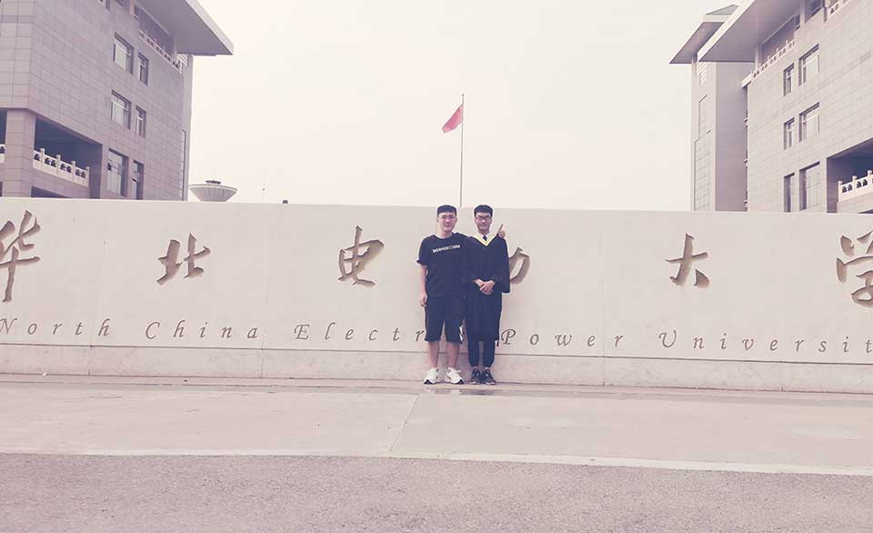

渐渐地，这个博客似乎变成了记事本，最初我是想来记录技术的鸭。
此刻我正坐在回家的高铁上，G301。看着窗外的风景，感慨万千。
哦，因为公司第二批报到是 7 月 8 号，得以有空回家看一下家人。
大学四年就这样结束了，比高中的感觉强烈得多，或许是年龄大了？亦或许是学生生涯的结束？亦或许是…
说来，学生生涯也不一定就这么结束，虽然目前看起来是结束了。
Dre@mtech
17 年清明节刚过，我加入这里。
两年多的时间，不算上睡觉，待在这里的时间应该比在宿舍要多。
一群志同道合的兄弟姐妹们。
一个老师
组长，亲爱的组长。
除了刚进组时的谈话，离校那天去车站路上的教诲，都让我铭记在心。
多笑，微笑待人。
遇事冷静，慢慢来，不要急，稳重。
多帮助他人，不要怕麻烦，少一点功利。
唯一的阿翔
我唯一的一个徒弟嗷，一个刚刚好。
我师父也只有我一个徒弟。
有种一脉相传的味道
你刚进组，和你聊了聊，那是我当时所有的故事，所有的大学体会。
说不上有多有用，但至少我希望你能少走些我走过的弯路，一番心意叭。
给了你我大学所有的课设、实验、文档，你是唯一的一个哈。
至少在我看来，你是个非常好的人，不是好人卡啊，就是各方面都很棒。
谢谢你的毕业礼物！还是不要这么贵重，有点接受不了。

计科 1501
从 15 年开学的第一次班会，到毕业典礼当晚的最后一次聚餐。
四年的时光有些久，但还是转眼就过去了。
咱们班的凝聚力算不上多好，但也说得过去。
我们一起晚自习、考试、团活动、聚餐、日租房、毕业…
合照
咱们班的合照，拍的还挺早的，随手挑了几个。
聚餐
毕业典礼当晚，最后一次班级聚餐嗷。
班主任确实挺能喝，但是顶不住我们不停歇的进攻啊，最后指着饭点的门，和我说起来“门当户对”的故事。
第一次去酒吧嗷，带着班主任一起。
刚进去的时候，班主任说：“我就跟着你了。”一路上还不免冒出一些“卧槽”之类的话，想来还有几分可爱。
13 舍 510
从 406→510，搬过一次宿舍。
宿舍给我帮助很多，有一点值得一提，那就是在组里刷完夜，清晨拖着疲惫的身体回宿舍的时候，有室友给我开个门。
之前，我们一起通宵打过游戏，一起吃鸡，一起王者，一起唱歌，一起学习。
现在，希望你们都能前程似锦，心想事成。
祝福
感谢大学遇见的每一个，你们或多或少都教会我了一些，收获很多。
未来，祝你们学业有成，事业有成，快乐幸福，万事如意。
欢迎来北京找我恰饭啊！
如果长时间无法加载，请针对 disq.us | disquscdn.com | disqus.com 启用代理